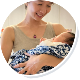
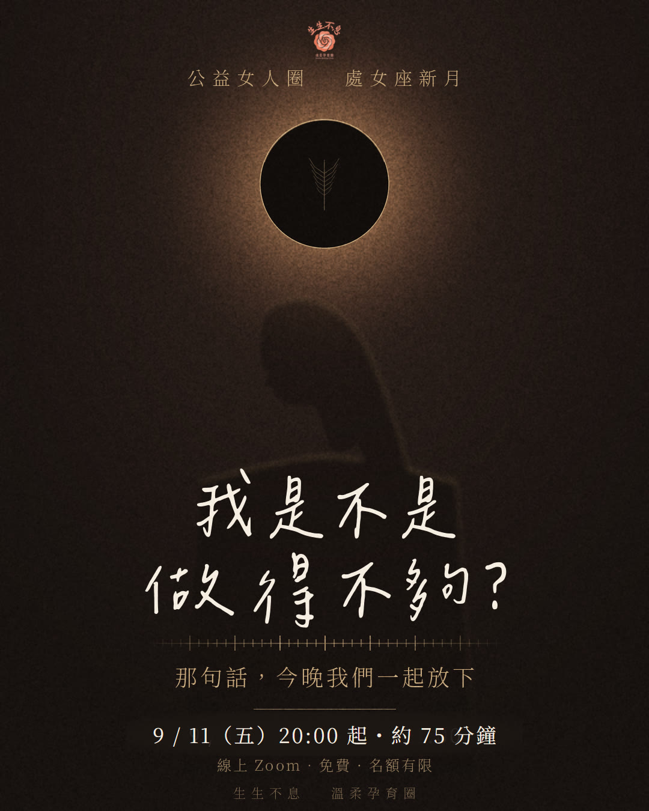

H O S T E D B Y
陪妳的人

宥妤
Womb-Moon 引導師

欣妙
陪產員・孕產顧問
每個月的新月夜，由 Womb-Moon 神聖女人圈的認證引導師帶領。
這裡沒有人是專家，每一個人都被聽見。

九月的新月，落在處女座。
處女座是那個會把每件事都再檢查一遍的星座——
它給了我們分辨的能力，也給了我們一把尺。
妳大概知道那把尺長什麼樣子。
孩子睡了、家裡終於安靜下來的那個晚上，
那句話就自己浮上來：
不夠努力、不夠健康、不夠溫柔、不夠有耐心。
明明已經累得說不出話了，還是覺得哪裡沒做好。
這句話很少被說出口。因為說出來，好像就承認了什麼。
9 月 11 日的晚上，我們一起把它說出來。
然後放下。
這一晚不訂新的目標，也不給妳新的方法。
我們只做一件事——看看那把尺，是誰給妳的。
一段安住與呼吸。不用馬上說話，先讓自己坐下來。
處女座新月的分享——那些「應該」是從哪裡進到我們身體裡的。
一段安靜的書寫。寫下妳一直用來丈量自己的那些標準。
一個簡單的儀式，把那把尺交出去。
想說的可以說，想安靜的可以安靜。兩種都是完整的參與。
這一場不錄影。妳說的話，只留在這個圈裡。
新月準確時刻：9/11 上午 11:27（台北）・處女座 18°26'
處女座的天賦是分辨——把混亂的一堆東西，理出哪些重要。它的另一面，是那把永遠可以再往上量一格的尺。新月是重新開始，但這一次不從訂目標開始，而是從放下標準開始。
這次新月與火星形成柔和的角度，而火星正走在巨蟹——照顧的位置。妳為別人使力從來不需要理由，為自己卻可以拖上三個月。這一晚，我們把那個力氣轉一個方向。
新月前一天，天王星在雙子座停滯轉向。雙子是訊息與比較。那把尺很少是自己做的——它是被一則一則的建議、清單、別人的做法灌進來的。這是向內看的時候，不是再學一套新方法的時候。

每個月的新月夜，由 Womb-Moon 神聖女人圈的認證引導師帶領。
這裡沒有人是專家，每一個人都被聽見。
這一晚通常會多 15 分鐘左右，請為自己保留 75 分鐘（大約到 21:15）——
讓最後的收尾能好好結束，不用趕著離開。
建議準備：一個不會被打擾的角落、紙和筆、一杯溫水。
不想開鏡頭也沒關係。妳來的樣子，就是剛剛好的樣子。